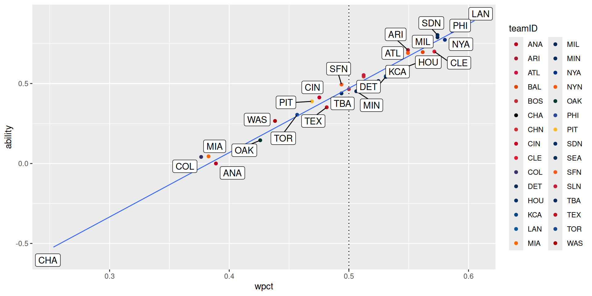

Bradley-Terry models
SDS 355
October 20, 2025
Paired comparison models
Bradley and Terry (1952)
Let \(A_i, A_j\) be teams. Then
\[ p_{ij} = \Pr{ \left( A_i \text{ defeats } A_j \right) } = \frac{\lambda_i}{\lambda_i + \lambda_j} \] for unobserved team strengths \(\lambda_i, \lambda_j > 0\).
Use logistic distribution
Set \(\beta_i = \ln{\lambda_i}\). Then,
\[ p_{ij} = \frac{1}{1 + e^{-(\beta_i-\beta_j)}} = F(\beta_i - \beta_j), \] where \(F(x)\) is the CDF of the logistic distribution with \(\mu = 0, s = 1\).
Tip
Setting \(s = 400\) yields the Elo rating system! (Elo 1978)
Convert to odds
Form the odds, then the log-odds:
\[\begin{align*} \frac{p_{ij}}{1 - p_{ij}} &= e^{(\beta_i - \beta_j)} \\ \ln{\left( \frac{p_{ij}}{1 - p_{ij}} \right)} &= \beta_i - \beta_j \end{align*}\]
Setup design matrix
But this is the setup for logistic regression:
\[\begin{align*} \ln{ \left( \frac{p_{ij}}{1 - p_{ij}} \right) } &= \beta_i - \beta_j \\ &= \begin{pmatrix} 0 & 0 & 1 & \cdots & -1 & \cdots & 0 \end{pmatrix} \begin{pmatrix} \beta_1 \\ \vdots \\ \beta_n \end{pmatrix} \\ &= \vec{X} \cdot \vec{\beta} \end{align*}\]
BradleyTerry2
Example: Men’s tennis
Head-to-head matchups
player1 player2 win1 win2
1 Djokovic Federer 9 6
2 Djokovic Murray 14 3
3 Djokovic Nadal 9 2
4 Djokovic Wawrinka 4 3
5 Federer Murray 5 0
6 Federer Nadal 5 1
7 Federer Wawrinka 7 2
8 Murray Nadal 2 4
9 Murray Wawrinka 2 2
10 Nadal Wawrinka 4 3Fit the model
Bradley Terry model fit by glm.fit
Call: BradleyTerry2::BTm(outcome = cbind(win1, win2), player1 = player1,
player2 = player2, data = tennis)
Coefficients:
..Federer ..Murray ..Nadal ..Wawrinka
-0.04034 -1.74464 -1.23797 -1.17612
Degrees of Freedom: 10 Total (i.e. Null); 6 Residual
Null Deviance: 26.9
Residual Deviance: 4.396 AIC: 34.04Recover abilities
# A tibble: 5 × 3
Player ability s.e.
<chr> <BTabilts> <BTabilts>
1 Djokovic 1.17612172 0.4995230
2 Federer 1.13578408 0.5109457
3 Wawrinka 0.00000000 0.0000000
4 Nadal -0.06185141 0.5148698
5 Murray -0.56851913 0.5683333 Visualize abilities
Example: MLB teams
Get Retrosheet data
Date DblHdr Day VisTm VisTmLg VisTmGNum HmTm HmTmLg HmTmGNum VisRuns
1 2024-03-20 0 Wed LAN NL 1 SDN NL 1 5
2 2024-03-21 0 Thu SDN NL 2 LAN NL 2 15
3 2024-03-28 0 Thu COL NL 1 ARI NL 1 1
4 2024-03-28 0 Thu WAS NL 1 CIN NL 1 2
5 2024-03-28 0 Thu SLN NL 1 LAN NL 3 1
6 2024-03-28 0 Thu PIT NL 1 MIA NL 1 6
HmRuns NumOuts DayNight Completion Forfeit Protest ParkID Attendance Duration
1 2 54 N <NA> NA NA SEO01 15952 185
2 11 54 N <NA> NA NA SEO01 15928 222
3 16 51 N <NA> NA NA PHO01 49011 157
4 8 51 D <NA> NA NA CIN09 44030 138
5 7 51 D <NA> NA NA LOS03 52667 143
6 5 72 D <NA> NA NA MIA02 32564 204
VisLine HmLine VisAB VisH VisD VisT VisHR VisRBI VisSH VisSF
1 000100040 001100000 33 7 0 0 0 4 0 2
2 504011103 114020120 43 18 3 1 1 14 0 2
3 010000000 20(14)00000x 30 4 2 0 0 1 0 0
4 000000200 03400001x 32 6 0 0 1 2 0 0
5 000100000 20300110x 31 3 0 0 1 1 0 0
6 002000210001 022010000000 44 9 2 0 3 6 0 0
VisHBP VisBB VisIBB VisK VisSB VisCS VisGDP VisCI VisLOB VisPs VisER VisTER
1 1 9 0 7 1 0 0 0 13 5 2 2
2 2 6 0 8 1 0 1 0 11 6 11 11
3 1 3 0 6 0 0 1 0 6 5 16 16
4 0 0 0 9 0 0 0 0 3 5 8 8
5 0 1 0 6 1 0 0 0 4 4 7 7
6 0 8 2 17 0 0 0 0 13 7 4 4
VisWP VisBalks VisPO VisA VisE VisPassed VisDB VisTP HmAB HmH HmD HmT HmHR
1 1 0 27 11 0 0 1 0 30 4 0 0 0
2 1 0 27 10 0 0 0 0 42 16 3 0 1
3 0 0 24 8 0 0 1 0 40 18 3 0 1
4 0 0 24 5 0 0 0 0 34 10 3 0 2
5 0 0 24 7 0 0 1 0 31 10 2 0 2
6 0 0 36 20 1 0 3 0 41 8 2 0 0
HmRBI HmSH HmSF HmHBP HmBB HmIBB HmK HmSB HmCS HmGDP HmCI HmLOB HmPs HmER
1 1 0 0 0 4 0 6 0 0 1 0 5 8 3
2 11 0 1 1 6 0 9 0 0 0 0 12 7 14
3 16 0 1 0 3 0 9 0 0 1 0 4 5 1
4 8 0 0 1 2 0 9 3 0 0 0 5 3 2
5 7 0 1 0 4 0 10 0 0 1 0 5 2 1
6 5 0 1 2 4 2 7 1 0 3 0 10 7 5
HmTER HmWP HmBalks HmPO HmA HmE HmPass HmDB HmTP UmpHID UmpHNm
1 3 1 0 27 8 2 0 1 0 barkl901 Lance Barksdale
2 14 2 0 27 7 2 0 1 0 fleta901 Andy Fletcher
3 1 0 0 27 14 0 0 1 0 belld901 Dan Bellino
4 2 0 0 27 8 1 0 0 0 iassd901 Dan Iassogna
5 1 0 0 27 2 1 0 0 0 porta901 Alan Porter
6 5 0 0 36 14 1 0 0 0 guccc901 Chris Guccione
Ump1BID Ump1BNm Ump2BID Ump2BNm Ump3BID Ump3BNm
1 torrc901 Carlos Torres viscj901 Jansen Visconti rehaj901 Jeremie Rehak
2 viscj901 Jansen Visconti rehaj901 Jeremie Rehak barkl901 Lance Barksdale
3 cuzzp901 Phil Cuzzi randt901 Tony Randazzo tosia901 Alex Tosi
4 buckc901 CB Bucknor becka901 Adam Beck may-b901 Ben May
5 blakr901 Ryan Blakney tomln901 Nate Tomlinson barbs901 Sean Barber
6 knigb901 Brian Knight morag901 Gabe Morales addir901 Ryan Additon
UmpLFID UmpLFNm UmpRFID UmpRFNm VisMgrID VisMgrNm HmMgrID
1 NA (none) NA (none) robed001 Dave Roberts shilm801
2 NA (none) NA (none) shilm801 Mike Shildt robed001
3 NA (none) NA (none) blacb001 Buddy Black lovut001
4 NA (none) NA (none) martd002 Dave Martinez belld002
5 NA (none) NA (none) marmo801 Oliver Marmol robed001
6 NA (none) NA (none) sheld801 Derek Shelton schus001
HmMgrNm WinPID WinPNm PID PNAme SavePID
1 Mike Shildt hudsd001 Daniel Hudson britj003 Jhony Brito phile001
2 Dave Roberts kingm002 Michael King yamay001 Yoshinobu Yamamoto suarr002
3 Tony Lovullo gallz001 Zac Gallen freek001 Kyle Freeland <NA>
4 David Bell montf001 Frankie Montas grayj004 Josiah Gray <NA>
5 Dave Roberts glast001 Tyler Glasnow mikom001 Miles Mikolas yarbr001
6 Skip Schumaker ortil003 Luis Ortiz crond001 Declan Cronin hernj005
SavePNm GWinRBIID GWinRBINm VisStPchID VisStPchNm HmStPchID
1 Evan Phillips <NA> (none) glast001 Tyler Glasnow darvy001
2 Robert Suarez cronj001 Jake Cronenworth musgj001 Joe Musgrove yamay001
3 (none) gurrl001 Lourdes Gurriel freek001 Kyle Freeland gallz001
4 (none) stees001 Spencer Steer grayj004 Josiah Gray montf001
5 Ryan Yarbrough freef001 Freddie Freeman mikom001 Miles Mikolas glast001
6 Jose Hernandez trioj001 Jared Triolo kellm003 Mitch Keller luzaj001
HmStPchNm VisBat1ID VisBat1Nm VisBat1Pos VisBat2ID
1 Yu Darvish bettm001 Mookie Betts 6 ohtas001
2 Yoshinobu Yamamoto bogax001 Xander Bogaerts 4 tatif002
3 Zac Gallen blacc001 Charlie Blackmon 9 bryak001
4 Frankie Montas abrac001 C. J. Abrams 6 thoml002
5 Tyler Glasnow donob001 Brendan Donovan 7 goldp001
6 Jesus Luzardo joe-c001 Connor Joe 9 reynb001
VisBat2Nm VisBat2Pos VisBat3ID VisBat3Nm VisBat3Pos VisBat4ID
1 Shohei Ohtani 10 freef001 Freddie Freeman 3 smitw003
2 Fernando Tatis 9 cronj001 Jake Cronenworth 3 machm001
3 Kris Bryant 3 jonen002 Nolan Jones 7 rodgb002
4 Lane Thomas 9 winkj002 Jesse Winker 7 menej001
5 Paul Goldschmidt 3 gormn001 Nolan Gorman 4 arenn001
6 Bryan Reynolds 7 hayek001 Ke'Bryan Hayes 5 mccua001
VisBat4Nm VisBat4Pos VisBat5ID VisBat5Nm VisBat5Pos VisBat6ID
1 Will Smith 2 muncm001 Max Muncy 5 hernt002
2 Manny Machado 10 kim-h002 Ha-Seong Kim 6 profj001
3 Brendan Rodgers 4 mcmar001 Ryan McMahon 5 diaze005
4 Joey Meneses 10 gallj002 Joey Gallo 3 ruizk001
5 Nolan Arenado 5 contw001 Willson Contreras 2 burla001
6 Andrew McCutchen 10 davih001 Henry Davis 2 cruzo001
VisBat6Nm VisBat6Pos VisBat7ID VisBat7Nm VisBat7Pos VisBat8ID
1 Teoscar Hernandez 7 outmj002 James Outman 8 heywj001
2 Jurickson Profar 7 campl002 Luis Campusano 2 wadet002
3 Elias Diaz 2 tovae001 Ezequiel Tovar 6 monte001
4 Keibert Ruiz 2 rosae001 Eddie Rosario 8 vargi001
5 Alec Burleson 10 walkj003 Jordan Walker 9 scotv001
6 Oneil Cruz 6 trioj001 Jared Triolo 4 tellr001
VisBat8Nm VisBat8Pos VisBat9ID VisBat9Nm VisBat9Pos HmBat1ID
1 Jason Heyward 9 lux-g001 Gavin Lux 4 bogax001
2 Tyler Wade 5 merrj002 Jackson Merrill 8 bettm001
3 Elehuris Montero 10 doylb001 Brenton Doyle 8 martk001
4 Ildemaro Vargas 5 garcl006 Luis Garcia 4 indij001
5 Victor Scott 8 winnm001 Masyn Winn 6 bettm001
6 Rowdy Tellez 3 taylm002 Michael Taylor 8 arral001
HmBat1Nm HmBat1Pos HmBat2ID HmBat2Nm HmBat2Pos HmBat3ID
1 Xander Bogaerts 4 tatif002 Fernando Tatis 9 cronj001
2 Mookie Betts 6 ohtas001 Shohei Ohtani 10 freef001
3 Ketel Marte 4 carrc005 Corbin Carroll 9 gurrl001
4 Jonathan India 4 bensw001 Will Benson 8 encac001
5 Mookie Betts 6 ohtas001 Shohei Ohtani 10 freef001
6 Luis Arraez 4 bellj005 Josh Bell 3 delab001
HmBat3Nm HmBat3Pos HmBat4ID HmBat4Nm HmBat4Pos
1 Jake Cronenworth 3 machm001 Manny Machado 10
2 Freddie Freeman 3 smitw003 Will Smith 2
3 Lourdes Gurriel 7 walkc002 Christian Walker 3
4 Christian Encarnacion-Strand 3 candj002 Jeimer Candelario 5
5 Freddie Freeman 3 smitw003 Will Smith 2
6 Bryan De La Cruz 10 chisj001 Jazz Chisholm 8
HmBat5ID HmBat5Nm HmBat5Pos HmBat6ID HmBat6Nm HmBat6Pos
1 kim-h002 Ha-Seong Kim 6 profj001 Jurickson Profar 7
2 muncm001 Max Muncy 5 hernt002 Teoscar Hernandez 7
3 moreg001 Gabriel Moreno 2 suare001 Eugenio Suarez 5
4 fralj001 Jake Fraley 9 delae003 Elly De La Cruz 6
5 muncm001 Max Muncy 5 hernt002 Teoscar Hernandez 7
6 burgj001 Jake Burger 5 sancj003 Jesus Sanchez 9
HmBat7ID HmBat7Nm HmBat7Pos HmBat8ID HmBat8Nm HmBat8Pos HmBat9ID
1 campl002 Luis Campusano 2 wadet002 Tyler Wade 5 merrj002
2 outmj002 James Outman 8 heywj001 Jason Heyward 9 lux-g001
3 alexb001 Blaze Alexander 10 thoma004 Alek Thomas 8 perdg001
4 stees001 Spencer Steer 7 martn003 Nick Martini 10 stept001
5 outmj002 James Outman 8 heywj001 Jason Heyward 9 lux-g001
6 andet001 Tim Anderson 6 gordn001 Nick Gordon 7 fortn001
HmBat9Nm HmBat9Pos Additional Acquisition
1 Jackson Merrill 8 <NA> Y
2 Gavin Lux 4 <NA> Y
3 Gerardo Perdomo 6 <NA> Y
4 Tyler Stephenson 2 <NA> Y
5 Gavin Lux 4 <NA> Y
6 Nick Fortes 2 <NA> YRefactor to matchup format
# A tibble: 6 × 4
# Groups: HmTm [1]
HmTm VisTm home_w away_w
<fct> <fct> <int> <int>
1 ANA ATL 1 2
2 ANA BAL 1 2
3 ANA BOS 1 2
4 ANA CHA 2 1
5 ANA CLE 0 3
6 ANA COL 1 2Fit the model
Bradley Terry model fit by glm.fit
Call: BTm(outcome = cbind(home_w, away_w), player1 = HmTm, player2 = VisTm,
id = "team", data = bt_games)
Coefficients:
teamARI teamATL teamBAL teamBOS teamCHA teamCHN teamCIN teamCLE
0.70941 0.69153 0.69629 0.46502 -0.58725 0.54370 0.41283 0.70002
teamCOL teamDET teamHOU teamKCA teamLAN teamMIA teamMIL teamMIN
0.04109 0.54163 0.59943 0.54586 0.91875 0.04471 0.78905 0.45173
teamNYA teamNYN teamOAK teamPHI teamPIT teamSDN teamSEA teamSFN
0.77340 0.69053 0.14522 0.82737 0.38860 0.80329 0.51580 0.49374
teamSLN teamTBA teamTEX teamTOR teamWAS
0.55275 0.43825 0.35151 0.30469 0.26591
Degrees of Freedom: 660 Total (i.e. Null); 631 Residual
Null Deviance: 823.3
Residual Deviance: 714.2 AIC: 1704Wrangle team strengths
# A tibble: 30 × 3
teamID ability s.e.
<chr> <BTabilts> <BTabilts>
1 LAN 0.9187506 0.2307869
2 PHI 0.8273696 0.2304666
3 SDN 0.8032914 0.2300761
4 MIL 0.7890511 0.2299159
5 NYA 0.7733974 0.2257321
6 ARI 0.7094136 0.2294201
7 CLE 0.7000213 0.2261616
8 BAL 0.6962859 0.2252221
9 ATL 0.6915301 0.2294049
10 NYN 0.6905312 0.2293995
# ℹ 20 more rowsVisualize team strengths
Consolidate team names
[1] "ANA" "ARI" "ATL" "BAL" "BOS" "CHA" "CHN" "CIN" "CLE" "COL" "DET" "HOU"
[13] "KCA" "LAN" "MIA" "MIL" "MIN" "NYA" "NYN" "OAK" "PHI" "PIT" "SDN" "SEA"
[25] "SFN" "SLN" "TBA" "TEX" "TOR" "WAS" teamIDretro name
1 ANA Los Angeles Angels
2 ARI Arizona Diamondbacks
3 ATL Atlanta Braves
4 BAL Baltimore Orioles
5 BOS Boston Red Sox
6 CHN Chicago Cubs
7 CHA Chicago White Sox
8 CIN Cincinnati Reds
9 CLE Cleveland Guardians
10 COL Colorado Rockies
11 DET Detroit Tigers
12 MIA Miami Marlins
13 HOU Houston Astros
14 KCA Kansas City Royals
15 LAN Los Angeles Dodgers
16 MIL Milwaukee Brewers
17 MIN Minnesota Twins
18 NYN New York Mets
19 NYA New York Yankees
20 OAK Oakland Athletics
21 PHI Philadelphia Phillies
22 PIT Pittsburgh Pirates
23 SDN San Diego Padres
24 SEA Seattle Mariners
25 SFN San Francisco Giants
26 SLN St. Louis Cardinals
27 TBA Tampa Bay Rays
28 TEX Texas Rangers
29 TOR Toronto Blue Jays
30 WAS Washington NationalsMatch teamIDs to get colors
# A tibble: 6 × 4
teamIDretro name primary secondary
<chr> <chr> <chr> <chr>
1 ARI Arizona Diamondbacks #a71930 #000000
2 ATL Atlanta Braves #ce1141 #13274f
3 BAL Baltimore Orioles #df4601 #000000
4 BOS Boston Red Sox #bd3039 #0d2b56
5 CHN Chicago Cubs #cc3433 #0e3386
6 CHA Chicago White Sox #000000 #c4ced4 Create color palette
ARI ATL BAL BOS CHN CHA CIN CLE
"#a71930" "#ce1141" "#df4601" "#bd3039" "#cc3433" "#000000" "#c6011f" "#e31937"
COL DET HOU KCA ANA LAN MIA MIL
"#333366" "#0c2c56" "#002d62" "#004687" "#ba0021" "#005a9c" "#ff6600" "#0a2351"
MIN NYN NYA OAK PHI PIT SDN SFN
"#002b5c" "#ff5910" "#003087" "#003831" "#284898" "#fdb827" "#002d62" "#fd5a1e"
SEA SLN TBA TEX TOR WAS
"#0c2c56" "#c41e3a" "#092c5c" "#c0111f" "#134a8e" "#ab0003" Visualize plot with team colors!
Collect standings
home <- bt_games |>
group_by(teamID = HmTm) |>
summarize(W = sum(home_w), L = sum(away_w))
away <- bt_games |>
group_by(teamID = VisTm) |>
summarize(W = sum(away_w), L = sum(home_w))
teams <- bind_rows(home, away) |>
group_by(teamID) |>
summarize(W = sum(W), L = sum(L)) |>
mutate(wpct = W / (W + L)) |>
left_join(strengths, by = join_by(teamID))
teams# A tibble: 30 × 6
teamID W L wpct ability s.e.
<chr> <int> <int> <dbl> <BTabilts> <BTabilts>
1 ANA 63 99 0.389 0.00000000 0.0000000
2 ARI 89 73 0.549 0.70941360 0.2294201
3 ATL 89 73 0.549 0.69153014 0.2294049
4 BAL 91 71 0.562 0.69628592 0.2252221
5 BOS 81 81 0.5 0.46502311 0.2243069
6 CHA 41 121 0.253 -0.58724852 0.2397303
7 CHN 83 79 0.512 0.54370015 0.2287967
8 CIN 77 85 0.475 0.41283278 0.2287729
9 CLE 92 69 0.571 0.70002125 0.2261616
10 COL 61 101 0.377 0.04109128 0.2317572
# ℹ 20 more rowsCompare to winning percentage
Add home field advantage
Update model
Bradley Terry model fit by glm.fit
Call: BTm(outcome = cbind(home_w, away_w), player1 = HmTm, player2 = VisTm,
formula = ~team + at_home, id = "team", data = bt_games2)
Coefficients:
teamARI teamATL teamBAL teamBOS teamCHA teamCHN teamCIN teamCLE
0.71120 0.69189 0.69644 0.46507 -0.58941 0.54440 0.41282 0.70089
teamCOL teamDET teamHOU teamKCA teamLAN teamMIA teamMIL teamMIN
0.04089 0.54217 0.59957 0.54641 0.91924 0.04430 0.79029 0.45229
teamNYA teamNYN teamOAK teamPHI teamPIT teamSDN teamSEA teamSFN
0.77469 0.69055 0.14453 0.82886 0.38841 0.80478 0.51603 0.49465
teamSLN teamTBA teamTEX teamTOR teamWAS at_home
0.55351 0.43829 0.35138 0.30462 0.26562 0.09057
Degrees of Freedom: 660 Total (i.e. Null); 630 Residual
Null Deviance: 823.3
Residual Deviance: 709.4 AIC: 1701Collect abilities
Visualize team strengths
Read more!
Lopez, Matthews, and Baumer (2018)
References

SDS 355